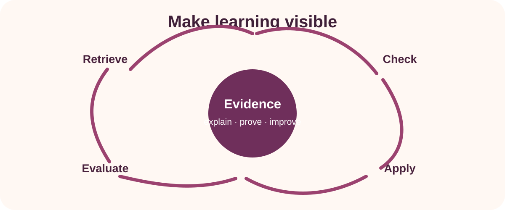

Choose
Work in the project your teacher has confirmed.
Private project evidence
Show the decisions, process and result behind your work—one useful piece of evidence at a time.

How this folio works
Work in the project your teacher has confirmed.
Record what you decided, did and learned.
Add a purposeful image, caption or source reference.
Device-local workspace
Text and images stay in this browser on this device. Do not include faces, student names or identifiable school details in photos. Your teacher must observe practical competence and confirm the current Classroom submission instructions.
Safe habit: download a backup after each major work session and before changing devices.
Your workspace
Evidence snapshot
Choose a project to see its evidence cards.
A backup includes this folio's writing and added images. It does not submit work to Classroom.
Older module and activity writing is preserved separately so a folio rebuild never erases it. Clearly matched magazine activity writing is copied into the magazine folio once; everything else remains available here for reference.
Device housekeeping
This clears the version 2 project cards and their images on this device. It does not clear older module responses, activities or any other course data.